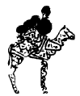

On Yedinci Yüzyıl İstanbul'unda
Bir Dervişin Güncesi ve Osmanlı Edebiyatında
Birinci Ağızdan Anlatılar

Ersilia’da oturanlar kentin yaşamını ayakta tutan bağları belirlemek için evlerin köşeleri arasına, renkleri akrabalık, takas, otorite, temsil ilişkilerine göre değişen, beyaz veya siyah veya gri veya siyah-beyaz ipler gererler. İpler artık aralarından geçilemeyecek kadar çoğaldığında çekip giderler. Evler parça parça sökülür; ipler ve dayakları kalır yalnızca.
Ersilia'yı terk edenler tüm ev eşyalarıyla konakladıkları bir tepenin eteğinden ovada yükselen kazık ve ip kargaşasına bakarlar. Ersilia kenti hâlâ odur, kendileri ise bir hiç.
Ersilia'yı başka yerde yeniden kurarlar. Eskisinden daha karmaşık olmakla birlikte kurallara daha uygun olmasını istedikleri aynı şekli dokurlar iplerle. Sonra onu da terk eder, kendilerini ve evleri daha da uzaklara taşırlar.
İşte bu yüzden Ersilia topraklarından geçerken dayanıksız duvarları yıkılmış, rüzgârın savurduğu ölü kemiklerinden yoksun, terk edilmiş kent kalıntıları görürsün: bir biçim arayan karmakarışık ilişkilerin örümcek ağları.
İtalo Calvino, Görünmez Kentler,
çev. Işıl Saatçioğlu, İstanbul: Remzi, 1990, s. 84